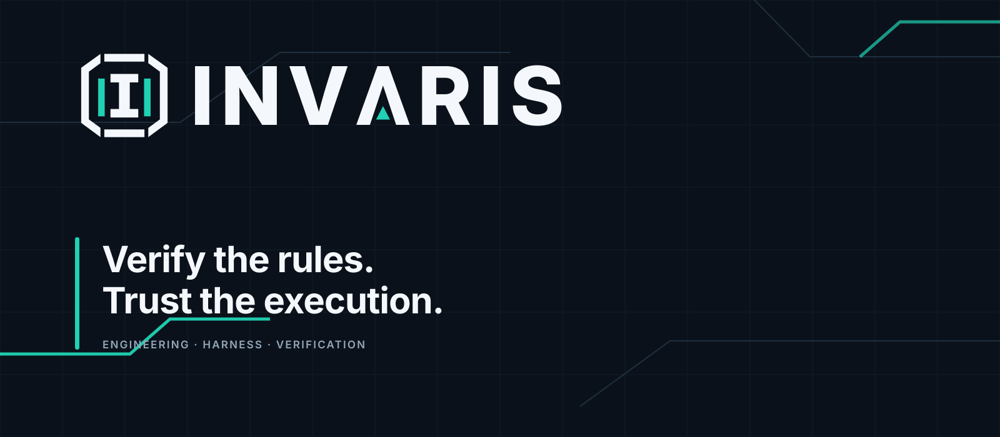

InvarisThe Guardian of System Invariants
Run a local workflow, verify the conditions that must hold, test whether a guard catches a deliberate violation, and measure whether selected tests detect a code change.
Run the example
From execution to evidence
run- Execute the configured steps in order. Stop on the first failed step and still run the guards.
check- Run the guards on their own to verify the current workspace.
challenge- Establish a passing baseline in a disposable copy, inject a configured file mutation, and check that the selected guard reports the expected evidence.
mutate- Run selected tests against a clean baseline and one explicitly validated replacement in a disposable copy.
Quick start
Download a CLI archive from the v0.1.0 release and follow the installation and terminal guide to choose an install folder, configure Bash or Zsh, and copy example files into a project folder. Windows CMD and PowerShell users can run the Linux CLI through WSL; this release has no native Windows archive. To run the examples from source, use Go 1.27.4 or later and a POSIX shell. The bundled example guards against a forbidden marker in a text file.
git clone https://github.com/akkaraponph/invaris.git
cd invaris
go run ./cmd/invaris check examples/invaris.json
go run ./cmd/invaris challenge examples/invaris.json
go run ./cmd/invaris run examples/invaris.jsonThe CLI writes an invaris.evidence/v1alpha2 JSON report to standard output for run, check, and challenge. The bundled challenge reports PROVEN when the clean baseline passes and the mutated guard fails with the expected output marker. The structured example also matches the configured policy ID and file path. Each challenge runs in a disposable copy that is removed and checked before the proof is final; a cleanup failure, a failing baseline or a finding at the wrong rule or path is never reported as PROVEN, and the report records the mutation digests, proof stages, a machine-readable reason and the inputs it can identify.
go run ./cmd/invaris mutate examples/mutation/killed.jsonThe mutation example returns KILLED and writes a v1alpha3 report with the baseline, validity, and selected test outcomes. Reports hold whole-file digests, not the edit itself: retain the harness and target bytes to inspect it.
0Successful action1Failure, unproven challenge, or surviving mutant2Invalid mutant, inconclusive result, refusal, or CLI error
Reference
- Installation and terminal guide Custom folders, Bash, Zsh, and Windows through WSL
- Harness specification Configuration, commands, and challenge behavior
- Structured inspection Policy and file matching
- Evidence schema Report fields and typed outcomes
- Threat model What proofs and workspaces do and do not protect
- Provider support Install and try the Dependency-Cruiser example
- Related projects Open-source verification and guardrail tools
- Go project example Real go tests and an import guard, with the evidence that explains each result
- Mutation fixtures Run killed, surviving, and invalid mutants
- Example harnesses Runnable configurations and fixtures
- Implementation status Supported features and planned capabilities
- Changelog Version 0.1.0
- Contributing Pull request rules and local checks
- Roadmap Experiment trust and explanation first; then isolation and tooling